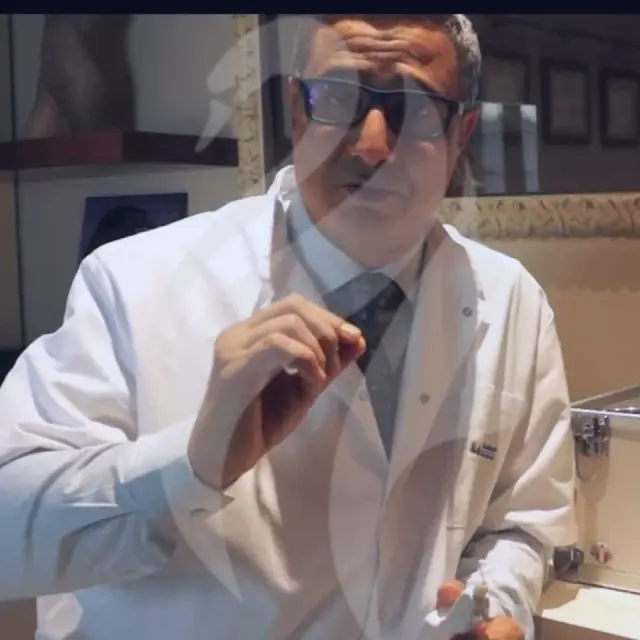
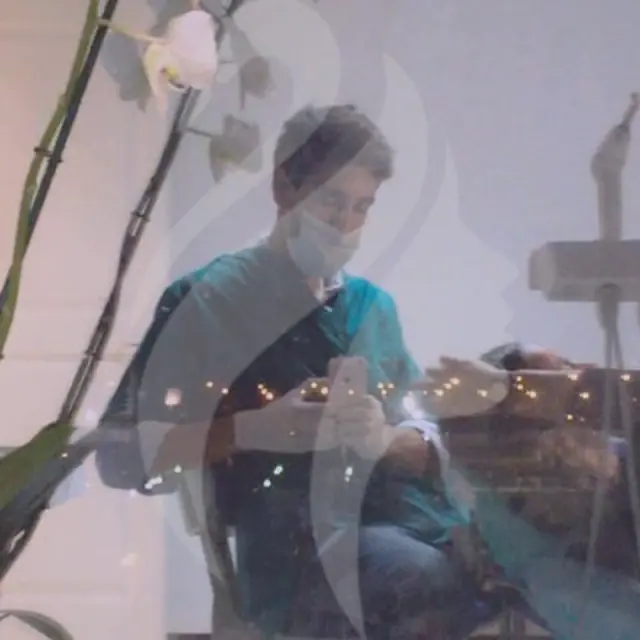
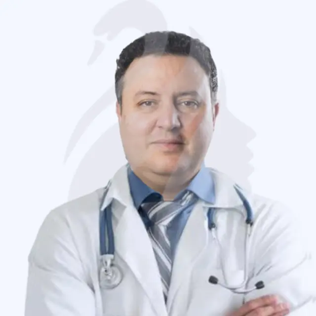

WB
WBDr Walid Balti
Chirurgie plastique, reconstructrice & esthétique
Lauréat de la Faculté de Médecine de Tunis, plus de 10 ans d'expérience et des stages de perfectionnement à Paris et Nice.
Voir le profilChirurgiens plasticiens, dentistes esthétiques et chirurgiens digestifs : une équipe pluridisciplinaire au service de votre transformation.
WBLauréat de la Faculté de Médecine de Tunis, plus de 10 ans d'expérience et des stages de perfectionnement à Paris et Nice.
Voir le profil AG
AGMembre de la Société Tunisienne de Chirurgie Esthétique, expert de l'harmonisation de la silhouette et du visage.
Voir le profil BB
BBPrésident du syndicat national des chirurgiens esthétiques de Tunisie, formé à Paris et au Canada.
Voir le profil
HBMembre des sociétés américaine (ASPS), internationale (ISAPS) et française (SOFCPRE) de chirurgie plastique.
Voir le profil SB
SBMembre du bureau T.A.M.A.S et ancienne interne des hôpitaux de Tunis.
Voir le profil FB
FBDiplômée de dentisterie esthétique de l'Université de Nice, formée en implantologie et Invisalign®.
Voir le profil
RMDentiste esthétique et designer de sourire, plus de 10 ans d'expérience.
Voir le profil
SAExpert en chirurgie digestive cœlioscopique et bariatrique, formé à Bruxelles (ULB) et Paris (IGR).
Voir le profilDes chirurgiens formés en Europe et en Amérique du Nord, membres des grandes sociétés savantes.
Une hôtesse dédiée et un conseiller à vos côtés, du premier échange à votre retour.
Des cliniques privées agréées par le ministère de la Santé, aux normes les plus strictes.
Une convalescence sereine, à l'hôtel et au soleil, pour un résultat naturel et durable.
Des cliniques privées modernes, lumineuses et confortables, agréées par le ministère de la Santé tunisien, pour une expérience en toute sérénité.
Prendre rendez-vousRecevez un devis gratuit et personnalisé sous 24 h. Nos conseillers répondent à toutes vos questions, sans engagement.